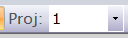

Projectを指定してインポートを行う
ChaKiには、wordテーブルおよび各アノテーションタグを階層化することのできる"Project"という概念が存在します。 デフォルトではすべての要素はID=0のProject内に存在しますが、このデフォルトProject以外のProjectを作成することにより、 wordやアノテーションをProject毎にグルーピングすることが可能となります。
Projectの用途としては、下記のようなものがあります。
- 単語の長単位・短単位の格納
- 異なる観点から同一コーパスに対して行われたアノテーションの区別
- 文単位での多言語間対照コーパスの作成（sentenceはProjectの影響を受けないため、文単位で対照させることしかできません）
新しいProjectを作成する
Projectを新たに作成するには、インポート(CreateCorpus)処理において、ID=0以外のProject IDを指定します。このとき、デフォルト プロジェクト(ID=0)が既に存在するコーパスを先に作成してあることが必要となります。
{kind=link}
この例では、既に存在するコーパス"sample.db"に対してProject ID=1となる新規Projectを追加しています。
この入力となるソースには、通常のインポートと全く同じソースが使用可能ですが、その内容については、 既にデフォルトProject内にインポートされている内容と完全に同じDocument, Sentenceの出現順序に従っていて、 各文内のwordの構成やアノテーションタグ(Segment, Link, Group) のみが異なるものを与えます。
- 既に存在するProject IDを指定しないでください。現状では、既に存在していたProjectの中身を削除することはありませんので、word等の要素が二重に追加されてしまいます。
- Projectが異なるword間で関連（多対多のマッピング）を保持することができるようになっています（「Word間マッピングのインポート」節を参照）。
Projectを指定して検索を行う
メインツールバーの"Proj"欄（下記）にProject IDを指定すると、検索時にそのProject IDに合致する結果のみを得ることができます。

Project=0（短単位）とProject=1（長単位）両方の検索結果を並べて表示したものを下図に示します。
{kind=link}
DependencyEditとProject
検索結果に対してDependencyEditを行うとき、検索に用いたProject ID、すなわちその結果が属しているProject IDがDependencyEditに 伝えられます。そして、そのDependencyEditにおいて行われる編集(アノテーションタグの追加・削除等）は、そのProjectに対して 行われることとなります。
コーパスエクスポート機能
エクスポート処理においても対象とするProjectを指定する必要がありますが、現在のところ未対応です。
Word間マッピングのインポート
ChaKiには、WordとWordとの間の対応関係を示すための特別なテーブル"word_word"が存在しており、対応するWord間の対応関係を格納することができるようになっています。現在の所このテーブルは、異なるProject間でWordとWordとの対応関係を記述するのに使用することが想定されています。例えば、
- Project 0に通常の語順でのWordの並びが格納されていて、他のProjectには「読み順」などそれとは異なる語順のWordの並びが格納されている
- Project 0に日本語、Project 1に英語というように対訳データを格納し、対応するWordをマークアップする
などの使い方が考えられます。
Word間マッピングをインポートするコマンドは、コマンドラインから"ImportWordRelation.exe"を実行します。 下記にUsageを示します。
Usage: ImportWordRelation [Options] <InputFile> <Output> Options (default): [-C] Do not pause on exit (false) [-b] Make relations bi-directional (false) [-a] Do not clear the mapping table; append mode (false) InputFile - TSV File Output - .db file for SQLite / .def file for Others
入力はProject, Sentence, WordNoの３つ組を基本として、From-word, To-wordを横に並べたTab-separated 形式となります。 すなわち、各行は、
- From-wordのProject
- From-wordのSentence No
- From-wordのWord No
- To-wordのProject
- To-wordのSentence No
- To-wordのWord No
というカラムから成ります。
関係は、デフォルトではFrom-wordからTo-wordの一方向ですが、"-b"オプションを付けることで双方向とすることも可能です。この場合、1つの入力それぞれについて、方向を逆にした2つのレコードが挿入されます。
下に入力ファイルの例を示します。
1 0 0 0 0 0 1 0 1 0 2 4 1 0 2 0 2 4 1 0 3 0 2 5 1 0 4 0 2 6 1 0 5 0 2 1 1 0 6 0 0 0 1 0 7 0 3 33 1 0 8 0 0 1 1 0 9 0 0 1 1 0 10 0 0 0 1 0 11 0 0 1 1 0 12 0 0 2 1 0 13 0 0 1 1 0 14 0 0 1 1 0 15 0 0 2